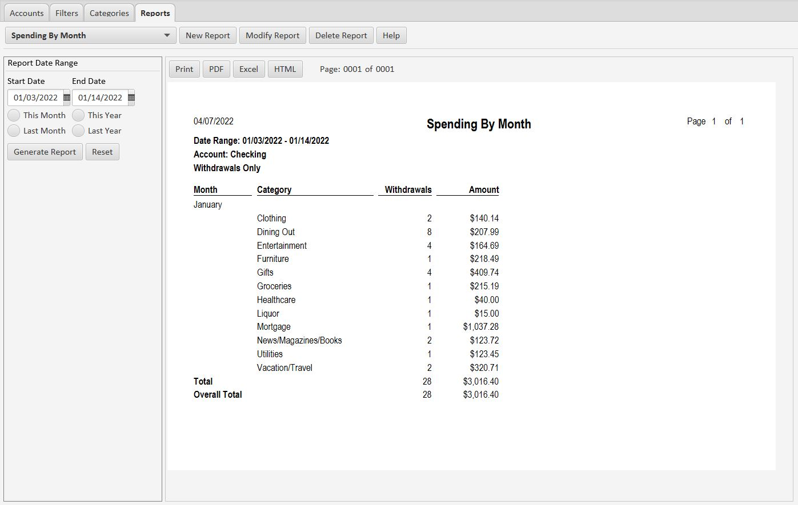

Introduction
Figures
Figures is a free, simple-to-use, flexible money management application. It is light-weight and fast, and stores your data in a SQLite database, which can be optionally encrypted. You can import and export your data in OFX or QIF formats.
Figures allows you to track your banking and credit card transactions by spending categories while at the same time you control how the transactions are displayed. It provides powerful search options so you can quickly and easily find transactions. And Figures has a flexible report generator so you can summarize your transactions any way you like.
Filters
The tool that gives you complete control of your transactions is the Figures filter. For example, if your bank gives you a transaction with a description like "THE HOME DEPOT THE HOME DEPOT #2", you can define a filter that searches for the words "HOME DEPOT" anywhere in the description. When it finds it, the filter will change the description to simply "Home Depot". At the same time, the filter will apply a spending category to the transaction, such as "Hardware". Filters can also flag a transaction as tax deductible.
The panel you use to define a filter looks like this:

Filters can be defined on descriptions or memos. Once you have defined a filter, it will be applied each time you load transactions into Figures. The original description and memo text is saved in the Figures file, so you can add, change, or delete filters at any time, and re-apply them to your transactions.
Search
The main account panel looks like this:

All the buttons in the app have clear, easy-to-understand text descriptions. The search panel at the left allows you to search for transactions by date, amount, type, and category. You can sort the transactions by clicking on the column headers. And you can export your search results as a PDF, to HTML, or as an Excel spreadsheet. Transactions are categorized using filters, or you can split a transaction into two or more categories (see the Empire Records transaction above).
Reports
The report panel looks like this:

The example above shows how you would create a monthly spending report. You just check the Month and Category boxes to summarize by month and category. Then select one or more accounts in the Accounts drop-down, select Withdrawals Only in the Transactions section, and check the All box in the Categories section. That's it. When you run the report you can select the date range you want to see.
The report looks like this:

You can export the report as a PDF, to HTML, or as an Excel spreadsheet.
Created with the Personal Edition of HelpNDoc: Free help authoring environment